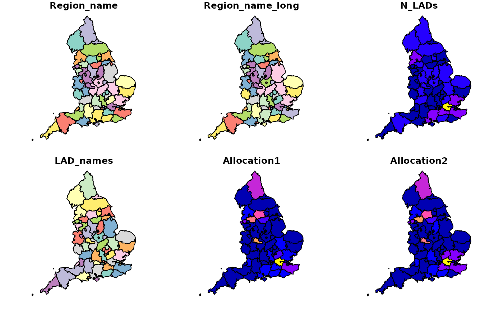

Local authorities of the UK
Downloading, reading and plotting the local authority districts of the UK
# Download data from the openinfra repo
url_regions_lad = "https://github.com/udsleeds/openinfra/raw/main/data-small/lads_joined_2021.geojson"
# Load data into a Simple Features frame
regions_lad = read_sf(url_regions_lad)
# Visualise the local authority districts of the UK
plot(regions_lad)
Interactive plot of the local authorites within the UK
## Transport regions within England Downloading, reading and plotting the transport regions of England
# Download data from the openinfra repo
url_transport_regions = "https://github.com/udsleeds/openinfra/raw/main/data-small/regions_new.geojson"
# Load data into a Simple Features frame
transport_regions = read_sf(url_transport_regions)
# Visualise transport regions of England
plot(transport_regions)
Interactive plot of transport regions within England